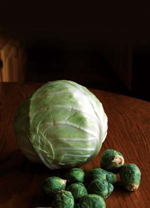
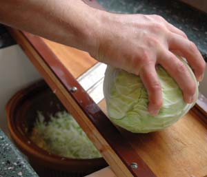
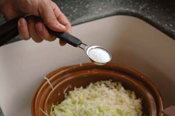
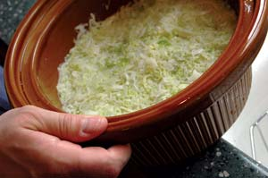
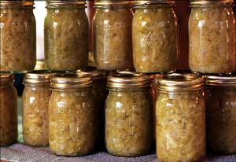

If you’ve only eaten store-bought, canned sauerkraut, you owe it to yourself to try the homemade variety. Fresh sauerkraut has a crunchier texture, a delightfully tangy flavor and a much greater potential for interesting recipes.
When European immigrants brought the technique for fermenting cabbage to the United States, many of their recipes included surprising ingredients such as apples, turnips, juniper berries, wine and garlic. In fact, traditional sauerkraut is very similar to the Korean dish kimchi, a food that’s also made with fermented cabbage but that contains additional vegetables, such as radishes and cucumbers, and is seasoned with ginger and other spices.
There’s nothing wrong with the classic, just-plain-cabbage variety of sauerkraut usually eaten on a hot dog or pork chop. But homemade sauerkraut made with additional vegetables, herbs and spices is more than a condiment; it’s a delicious side dish all on its own - and a surprisingly healthy one.
Perhaps because it’s often paired with hot dogs, sauerkraut doesn’t have a reputation as an especially healthy food, but that’s been changing in the last few years. One reason is that sauerkraut is a live-culture “probiotic” food. Fresh sauerkraut contains lactobacilli, beneficial bacteria that improve the functioning of the digestive tract. Probiotic foods such as sauerkraut and yogurt are often recommended for people taking antibiotics, which kill both the beneficial and harmful bacteria in the body. Live-culture foods can help restore the beneficial bacteria.
Sauerkraut also is a good source of fiber and essential nutrients, including iron, vitamin K and vitamin C. In fact, in the 18th century, sailors ate sauerkraut on long voyages to prevent scurvy, a disease caused by vitamin C deficiency.
Another interesting health claim was made last fall by a group of Korean scientists. They reported that feeding an extract of kimchi to 13 chickens with avian flu led to a much lower mortality rate in the birds. More research is needed to support this claim, but the announcement fueled a spike in sauerkraut sales last year. Scientists also are studying cabbage and other vegetables in the brassica family for their potential to prevent breast cancer.
In spite of its many health benefits, most sauerkraut is still loaded with salt. If you’re on a low-sodium diet, you may be better off avoiding sauerkraut entirely, or making your own at home with a low-salt recipe.
Making your own sauerkraut is a terrific way to preserve an abundant harvest of cabbage, and it’s a remarkably simple process that requires just two basic ingredients - shredded cabbage and salt. A few simple tools can make the process even easier. You can shred the cabbage with a regular vegetable grater, but a full-sized cabbage slicer is easier and more fun. These large graters look like antiques, but you can purchase one through eBay for $15 or less.
Once you’ve shredded the cabbage, you’ll need to pack it tightly in a suitable container. Many people use a large crock, but a food-grade plastic bucket also works. Next, you’ll need to put something heavy on top of the shredded cabbage, which will help it release water. The usual technique is to cover the cabbage with a plate, and then put a couple of clean rocks on top. If that seems a little too old-fashioned, a bag full of water also works as a weight.
At this point, you can sit back and let the cabbage ferment. The shredded cabbage releases water, which combines with the salt to form vegetable brine. Bacteria on the cabbage create lactic acid, which acts as a preservative. As the cabbage ferments, scum floats to the top of the container. Don’t worry, scum is normal. Just remove it regularly so it doesn’t inhibit fermentation.
Cabbage ferments quickly at room temperature and will be ready to eat in two or three weeks. At cooler temperatures, fermentation is slower, but the kraut stays crunchier and may have better flavor. Also, sauerkraut will spoil more quickly if you don’t keep it cool (if it turns dark brown, it’s spoiled) so keep it in a cool place, such as a refrigerator or root cellar, unless you plan to can it or eat it all within a few weeks.
2 large heads of cabbage (about 5 pounds)
2 to 3 tbsp noniodized salt
Grate 1 cabbage and place in a crock or plastic bucket. Sprinkle half the salt over the cabbage. Grate the second cabbage, then add it to the crock along with the rest of the salt. Crush the mixture with your hands until liquid comes out of the cabbage freely. Place a plate on top of the cabbage, then a weight on top of the plate. Cover the container and check after 2 days. Scoop the scum off the top, repack and check every 3 days. After 2 weeks, sample the kraut to see if it tastes ready to eat. The flavor will continue to mature for the next several weeks. Canning or refrigerating the sauerkraut will extend its shelf life. Yields about 2 quarts.
As a food preservation technique, fermentation is not an exact science - unlike canning, which requires specific techniques for safety reasons. The proportions in these sauerkraut recipes can be adjusted to taste, including the amount of salt. Salt is a preservative, so using more of it creates a crunchier, longer-lasting sauerkraut. Less salt produces a softer sauerkraut that may not keep as long. Many recipes call for 3 tablespoons salt for every 5 pounds of cabbage, but this can be reduced. No-salt sauerkraut is theoretically possible, but not recommended.
Garlic Sauerkraut
Follow the above recipe, adding 5 cloves of chopped garlic and 2 sliced onions when you add the salt.
Spicy Sauerkraut
Follow the above recipe, adding 3 sliced poblano peppers when you add the salt. Leave the seeds in the sliced peppers for added heat!
Sauersprouts
Follow the above recipe, but also chop 5 to 10 Brussels sprouts and thoroughly mix into the cabbage when you add the salt.
Check out these books for more on food preservation techniques.
Wild Fermentation: The Flavor, Nutrition, and Craft of Live-Culture Foods
By Sandor Ellix Katz
The Joy of Pickling: 200 Flavor-packed Recipes for all Kinds of Produce from Garden or Market
By Linda Ziedrich
Keeping Food Fresh: Old World Techniques and Recipes
By The Gardeners and Farmers of Terre Vivante
|
 MEGAN PHELPS When European immigrants brought the technique for fermenting cabbage to the United States, many of their recipes included surprising ingredients such as apples, turnips, juniper berries, wine and garlic. |
 MEGAN PHELPS Full-sized cabbage slicers may look like antiques, but you can purchase one through eBay for $15 or less. |
 MEGAN PHELPS In spite of its health benefits, most sauerkraut is loaded with salt. If you’re on a low-sodium diet, you may be better off avoiding sauerkraut entirely, or making your own at home with a low-salt recipe. |
|
 MEGAN PHELPS Sauerkraut is a good source of fiber and other essential nutrients, including iron and vitamins K and C. |
 RICK WETHERBEE Sauerkraut will spoil quickly if it becomes too warm (it will turn brown if it does), so keep it in a cool place, such as a refrigerator or root cellar. |
|